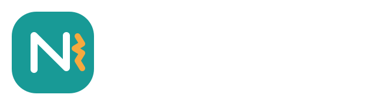
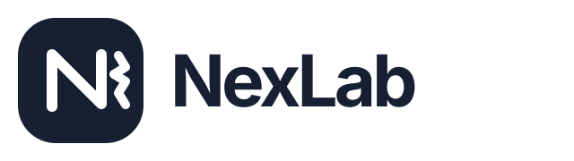
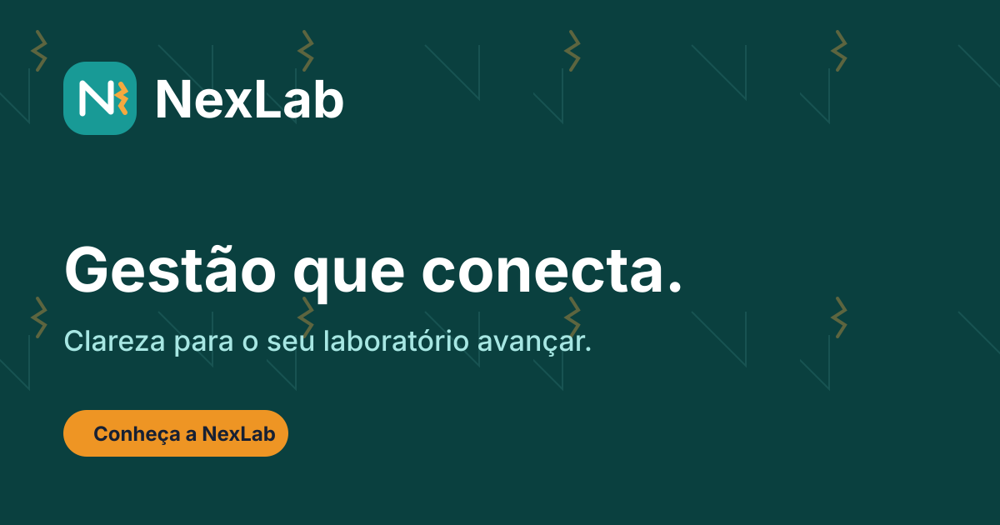
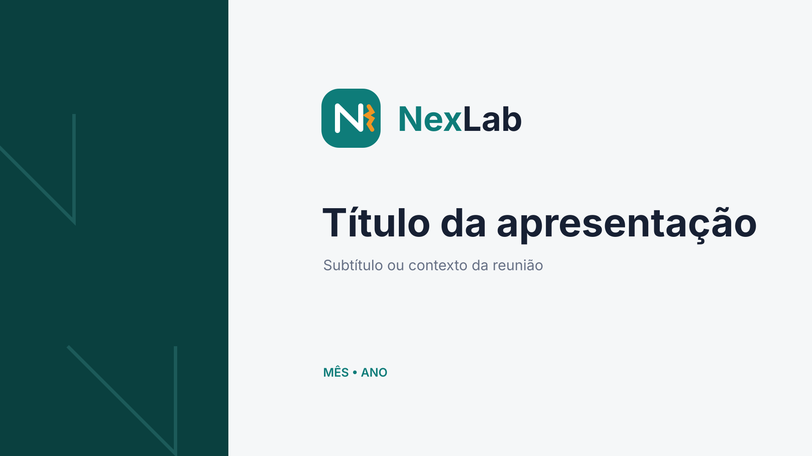

Clareza
Informação sem ruído, hierarquia direta e decisões mais rápidas.

Sistema de identidade visual
Uma marca clara, confiável e humana para transformar a rotina dos laboratórios.
01 · Essência
NexLab organiza operação, clientes e finanças em um só fluxo. A identidade traduz essa promessa com uma linguagem que equilibra rigor técnico e simplicidade cotidiana.
Promessa de marca
Dar clareza para o laboratório decidir melhor, trabalhar com fluidez e crescer com controle.
Informação sem ruído, hierarquia direta e decisões mais rápidas.
Pessoas, processos e resultados integrados em uma mesma experiência.
Precisão operacional com uma presença acolhedora e responsável.
02 · Logo
O “N” contínuo representa conexão. Os três impulsos âmbar sinalizam fluxo, avanço e integração. O conjunto tem personalidade tecnológica sem perder calor humano.


03 · Construção e escala
A consistência da marca depende tanto do que a cerca quanto do próprio desenho. Use estas regras em todas as aplicações.
Reserve, em todos os lados, uma distância mínima equivalente à altura do “x” do wordmark. Nenhum texto, borda ou imagem deve invadir essa área.
Logo completo: 120 px no digital ou 32 mm no impresso. Símbolo: 24 px no digital ou 8 mm no impresso. Abaixo disso, use o favicon simplificado.
04 · Universo cromático
O teal é proprietário e dominante. O âmbar destaca ação e movimento. O azul-ardósia sustenta textos e fundos institucionais.
Fundos, áreas de leitura e respiro.
Marca, navegação e elementos de confiança.
Ações prioritárias e pequenos acentos.
05 · Tipografia
Inter Variable é a voz visual da NexLab: legível em dados densos, humana em mensagens e precisa em interfaces. Use pesos de 400 a 750.
64 / 68 · 720Decisões mais claras.32 / 38 · 680Tudo em um só fluxo.16 / 26 · 400Uma experiência simples para uma operação complexa.12 / 16 · 650Status · Em produçãoFallback recomendado: Inter, ui-sans-serif, system-ui, sans-serif. Para números financeiros, habilite algarismos tabulares.
06 · Voz e linguagem
A NexLab fala com segurança, proximidade e utilidade. Explica sem infantilizar, orienta sem pressionar e prefere verbos concretos a jargão técnico.
Diz o essencial na ordem em que a pessoa precisa agir.
✓ “Escolha um cliente antes de salvar.”× “Falha na validação do registro.”Usa português natural, respeitoso e sem burocracia.
✓ “Tudo certo. A OS foi criada.”× “Operação realizada com sucesso.”Mostra o caminho quando algo não funciona.
✓ “Revise o valor e tente novamente.”× “Erro 422.”Gestão que conecta.
Uso institucional. Em campanhas, pode ser acompanhada por “Clareza para o seu laboratório avançar.”
07 · Grafismos e imagem
O sistema gráfico nasce do “N” contínuo e dos impulsos âmbar. Use-o em grande escala, com bastante respiro e baixa opacidade.
Pattern institucional
Ideal para capas, eventos, relatórios e peças digitais. Não aplicar atrás de textos pequenos.
Prefira cenas reais de trabalho, luz natural, mãos em processo e colaboração. Tons frios e limpos, com presença humana autêntica.
Use traço simples de 1,75 px, cantos arredondados e a mesma família em toda a peça. Teal para navegação; cores semânticas apenas para status.
08 · Aplicações
A identidade funciona melhor quando cria consistência sem competir com o conteúdo. Nos produtos, a clareza da tarefa sempre vem primeiro.
Visão geral
Acesse a gestão do seu laboratório.


09 · Usos incorretos
Não redesenhe, distorça ou decore a marca. A força do sistema vem da repetição consistente.
Não distorcer proporções.
Não rotacionar.
Não adicionar efeitos.
Não usar sem contraste.
Não alterar as cores.
Não violar o tamanho mínimo.
10 · Pacote de marca
Arquivos vetoriais, ícones, tokens e templates organizados. SVG é o formato preferencial para telas e materiais de alta resolução.
Versão colorida para fundos claros.
Versão para fundos escuros e fotografia.
Arquivos claro e escuro para uma cor.
Avatar, app icon e espaços compactos.
Grafismo repetível para fundos.
Variáveis CSS oficiais da identidade.
Capa editável em formato 16:9.
Template 1200 × 630 px.
HTML leve e compatível.
{kind=link}
{kind=link}
{kind=link}
{kind=link}
{kind=link}
{kind=link}
{kind=link}
{kind=link}